Xenlleiro
Cociña con Xeito
Arroces al momento · fondo casero · capa fina
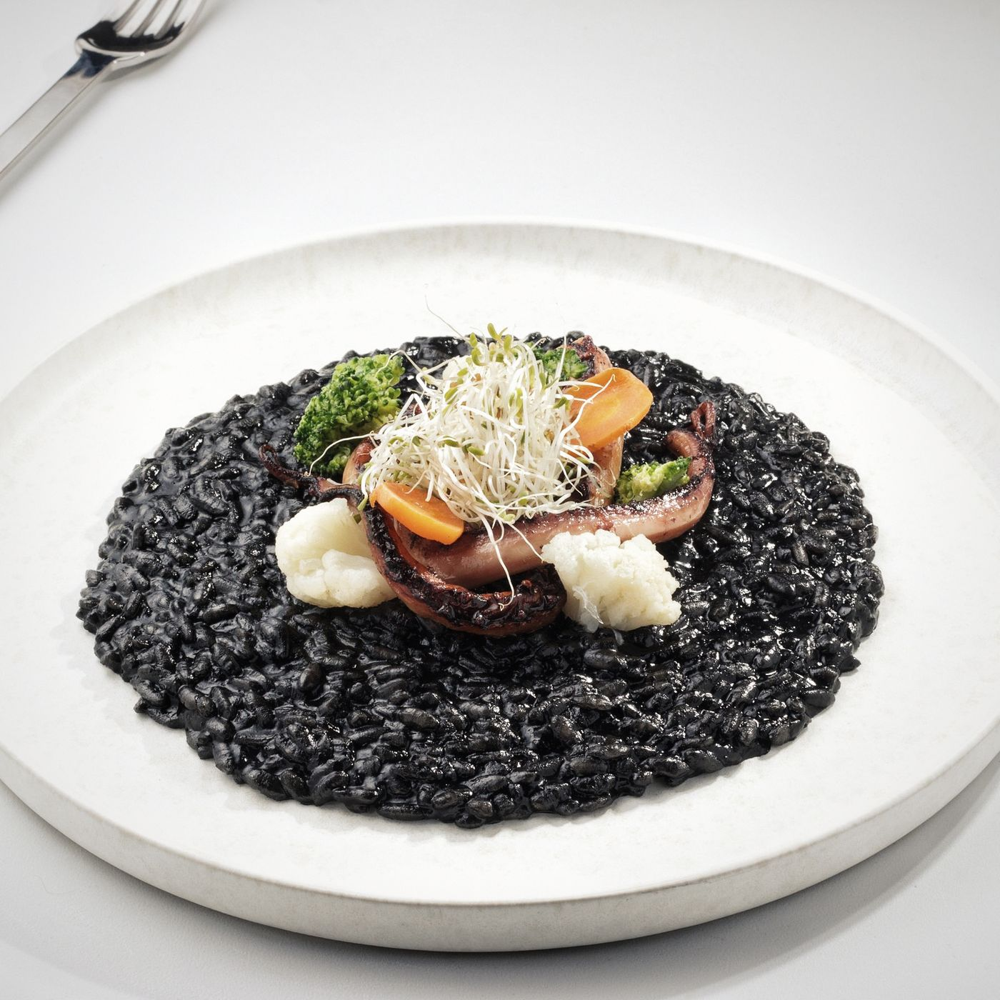
Reservar por WhatsApp Ver la carta
Rúa Capela, 8 · Arteixo
Desayunos y comidas toda la semana.
Cenas, viernes y sábado.
Nuestra cocina
Respetar el producto, cuidar los tiempos
Nuestra propuesta nace de la cocina tradicional con un toque moderno. Se respeta el producto y se cuidan los tiempos de elaboración en cada plato: el fondo de los arroces se hace en casa, las carnes van a baja temperatura y el pescado entra directo de lonja.
Nada sale antes de tiempo. Por eso los arroces se empiezan cuando los pides y tardan lo que tienen que tardar.
[TIEMPO DE ESPERA DE LOS ARROCES PENDIENTE] — si nos confirmáis los minutos, lo decimos aquí en claro para que nadie se lleve sorpresas.
-
Fondo casero
La base de todos los arroces se elabora en la cocina del restaurante.
-
Al momento
Cada arroz se arranca con la comanda. Es lo que permite servirlo en capa fina y con el punto justo.
-
Producto de lonja
El pescado del día es una selección fresca directa de lonja, según lo que dé el mercado.
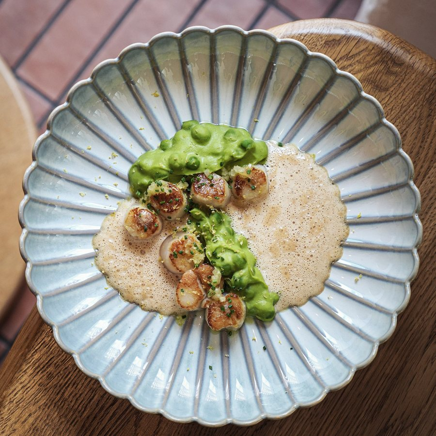
El arroz se mira desde arriba. Por eso se sirve en capa fina: para que se vea el grano, el socarrat y todo lo que lleva encima.
Celíacos y veganos, sin que sea un apaño
Adaptamos la carta con opciones para personas celíacas y veganas, con la máxima dedicación y seguridad en cada preparación. El arroz vegano es un plato de la carta, no un plato de repuesto. Avísanos al reservar y lo dejamos preparado.
[ALÉRGENOS: LISTADO COMPLETO PENDIENTE] — falta el detalle plato a plato para poder publicarlo aquí.
Los arroces
Elaborados al momento con fondo casero
Cinco arroces en carta. Todos se sirven en capa fina, como se ven aquí: desde arriba.
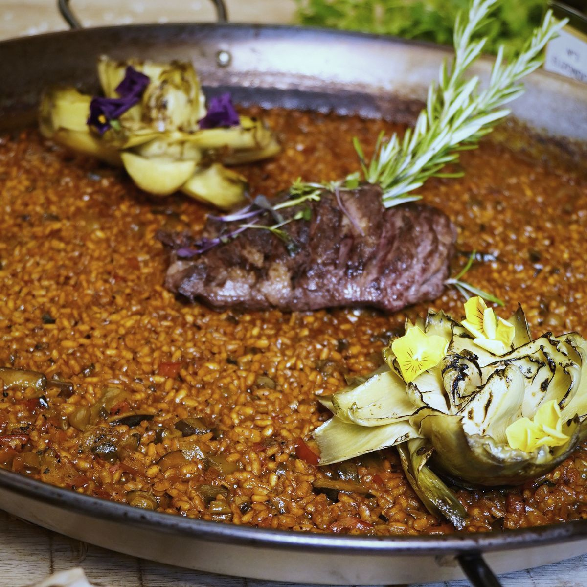
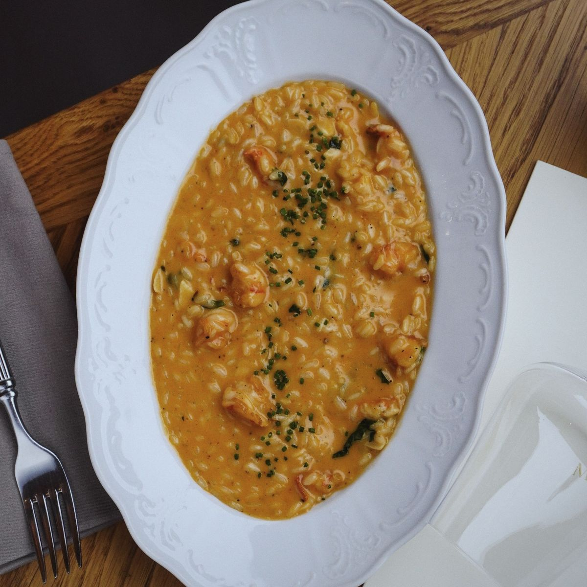
01 05
Fotografía de archivo: el restaurante aún no ha enviado la foto propia de cada arroz.
-
Arroz con chuletón y setas
Chuletón de 1,2 kg
Corte seleccionado servido sobre arroz en capa fina.
[PRECIO PENDIENTE]
-
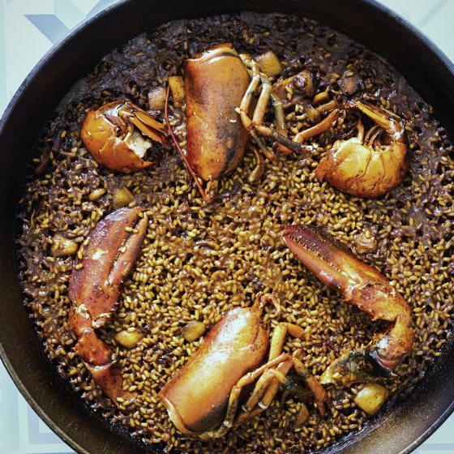
Arroz mixto
Mar y montaña
Pollo o conejo, judías verdes, langostinos y calamares.
[PRECIO PENDIENTE]
-
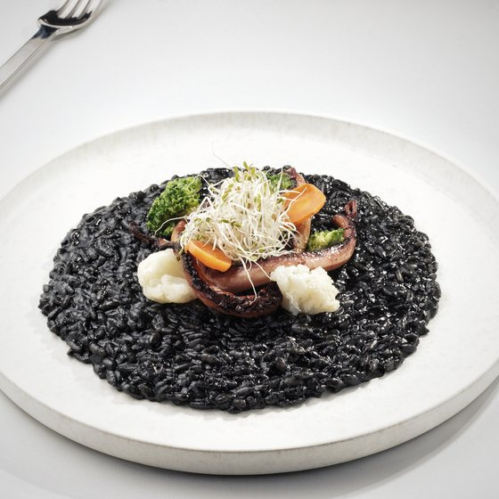
Arroz negro
El de la portada
Chocos en su tinta, pulpo y zamburiñas.
[PRECIO PENDIENTE]
-
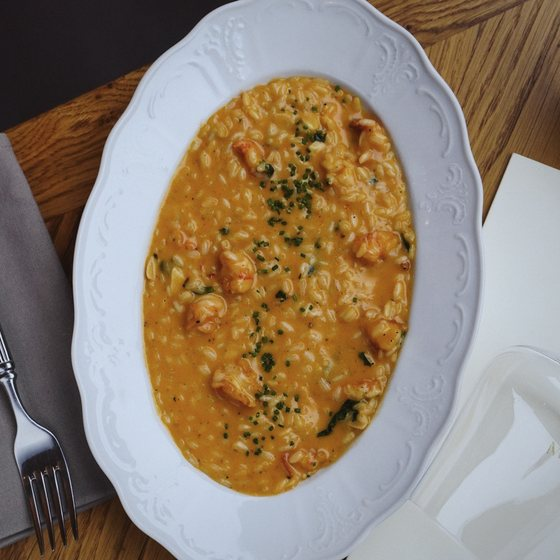
Arroz meloso senyoret
Todo limpio, sin cáscaras
Rape, langostinos y calamares limpios.
[PRECIO PENDIENTE]
-
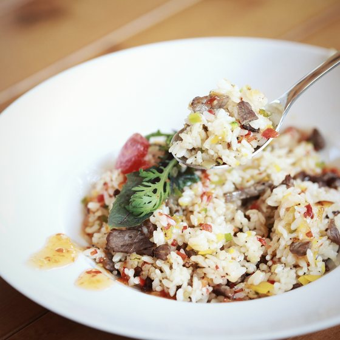
Arroz vegano
100 % vegetal
Selección de verduras frescas de temporada.
[PRECIO PENDIENTE]
La carta
Para compartir, arroces, carnes y pescados
Esta es la carta que sirve el restaurante. Los precios aún no están confirmados y aparecen marcados como pendientes.
Para compartir
Fritura mixta
Calamar, pulpo, cazón en adobo y croquetas caseras.
[PRECIO PENDIENTE]
Pan bao de churrasco
Con mayonesa kimchi.
[PRECIO PENDIENTE]
Zamburiñas a la plancha
Con aliño tradicional de la casa.
[PRECIO PENDIENTE]
Pata de pulpo a la plancha
Con láminas de papada ibérica y salteado de setas.
[PRECIO PENDIENTE]
Huevos rotos de corral
Con langostinos y jamón 50 % ibérico.
[PRECIO PENDIENTE]
Arroces
Elaborados al momento con fondo casero.
Arroz con chuletón (1,2 kg) y setas
Corte seleccionado servido sobre arroz en capa fina.
[PRECIO PENDIENTE]
Arroz mixto
Pollo o conejo, judías verdes, langostinos y calamares.
[PRECIO PENDIENTE]
Arroz negro
Chocos en su tinta, pulpo y zamburiñas.
[PRECIO PENDIENTE]
Arroz meloso senyoret
Rape, langostinos y calamares limpios.
[PRECIO PENDIENTE]
Arroz vegano
Selección de verduras frescas de temporada.
[PRECIO PENDIENTE]
Carnes y pescados
Rabo de toro a baja temperatura
Con muselina de apionabo y zanahorias baby glaseadas.
[PRECIO PENDIENTE]
Costillas a baja temperatura
Con patatas deluxe especiadas.
[PRECIO PENDIENTE]
Rape en salsa verde
Con habitas tiernas.
[PRECIO PENDIENTE]
Lubina salvaje al horno
Sobre cama de patatas panaderas.
[PRECIO PENDIENTE]
Pescado del día
Selección fresca directa de lonja según mercado.
[PRECIO PENDIENTE]
Desayunos
Se desayuna aquí todos los días menos el lunes
Xenlleiro abre a las nueve de la mañana de martes a domingo. Los desayunos se sirven a diario, pero el restaurante todavía no tiene publicada una carta de desayunos.
[CARTA DE DESAYUNOS PENDIENTE]
Pásanos la lista y los precios y se monta con el mismo formato que la carta de comidas.
No aparecen postres, carta de vinos ni menú del día porque el restaurante no los tiene publicados: [POSTRES PENDIENTES] · [CARTA DE VINOS PENDIENTE] · [MENÚ DEL DÍA PENDIENTE].
Cuándo venir
Desayunos y comidas toda la semana. Cenas, viernes y sábado.
Lunes cerrado. El resto de días abrimos a las 9:00 y servimos hasta las 17:00. Viernes y sábado, además, cenas de 19:30 a 23:30.
- Lunes Cerrado
- Martes De 9:00 a 17:00
- Miércoles De 9:00 a 17:00
- Jueves De 9:00 a 17:00
- Viernes De 9:00 a 17:00 y de 19:30 a 23:30
- Sábado De 9:00 a 17:00 y de 19:30 a 23:30
- Domingo De 9:00 a 17:00
Desayunos y comidas · 9:00–17:00 Cenas · 19:30–23:30, solo viernes y sábado
El local
Madera clara, mármol y luz de ventanal
Un local nuevo y luminoso en la Rúa Capela, con terraza para cuando acompaña el tiempo. Se admiten mascotas, hay wifi gratis, aire acondicionado y zona de fumadores.
- Terraza
- Se admiten mascotas
- Wifi gratis
- Aire acondicionado
- Zona de fumadores
- Efectivo, tarjeta y contactless
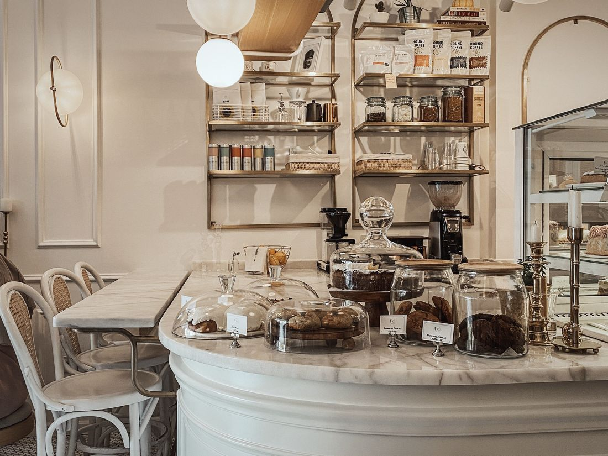
Archivo · falta la foto real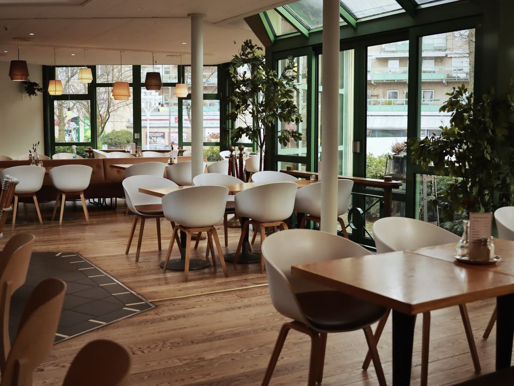
Archivo · falta la foto real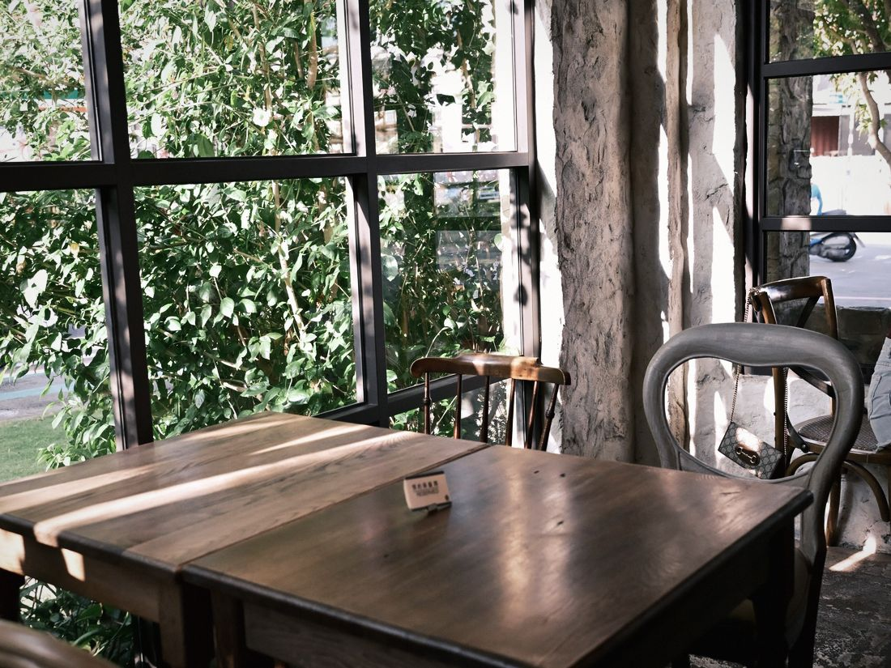
Archivo · falta la foto real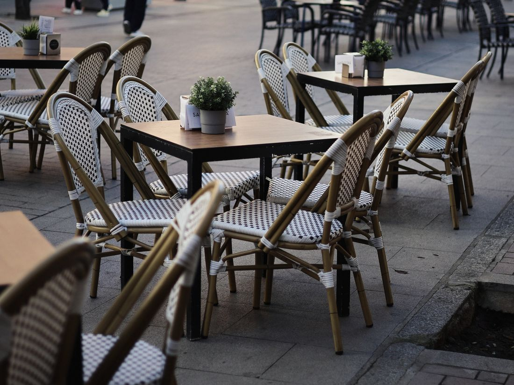
Archivo · falta la foto real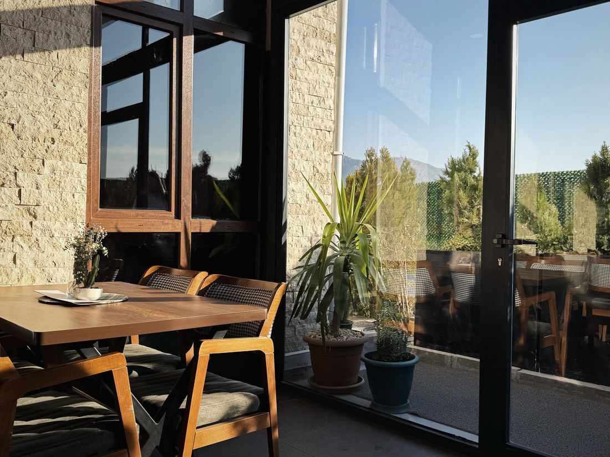
Archivo · falta la foto realSeis huecos reservados para las fotos reales del local. Cinco llevan de momento imágenes de archivo que no son de Xenlleiro, elegidas solo por parecido de luz y materiales; el sexto se ha dejado vacío a propósito. Se sustituyen todas en cuanto lleguen las fotos del restaurante.
- [AÑO DE APERTURA PENDIENTE]Cuántos años lleva abierto el restaurante.
- [CAPACIDAD Y Nº DE MESAS PENDIENTE]Comedor, barra y terraza.
- [EQUIPO DE COCINA Y SALA PENDIENTE]Quién está detrás de los arroces.
Lo que dicen
[VALORACIÓN GOOGLE PENDIENTE]
sobre [Nº RESEÑAS PENDIENTE] reseñas en Google
No se publica aquí una nota que no se haya podido comprobar. En cuanto llegue el enlace de la ficha de Google, aparecen la valoración real y el número de reseñas, con el contador animado ya preparado.
[TEXTO DE RESEÑA PENDIENTE]
[NOMBRE PENDIENTE] · Google
[TEXTO DE RESEÑA PENDIENTE]
[NOMBRE PENDIENTE] · Google
[TEXTO DE RESEÑA PENDIENTE]
[NOMBRE PENDIENTE] · Google
Contacto y reserva
Reserva por WhatsApp
Los arroces se hacen al momento: si vais a ser varios, avisar antes ayuda a tenerlo todo listo. Dinos día, hora, cuántos sois y si hay alguna celiaquía o dieta vegana en la mesa.
Reservar por WhatsApp · 617 00 46 70 Llamar · 881 10 21 64
- Dirección
- Rúa Capela, 8
15142 Arteixo, A Coruña - Teléfono
- 881 10 21 64
- 617 00 46 70
- xenlleiro@gmail.com
- @xenlleiro
- Horario
- Lunes cerrado
Martes a domingo, 9:00–17:00
Viernes y sábado, también 19:30–23:30
[RESERVA ONLINE PENDIENTE] — hoy la reserva es por WhatsApp o teléfono. Si más adelante se contrata un sistema de reservas, se conecta a este mismo botón.